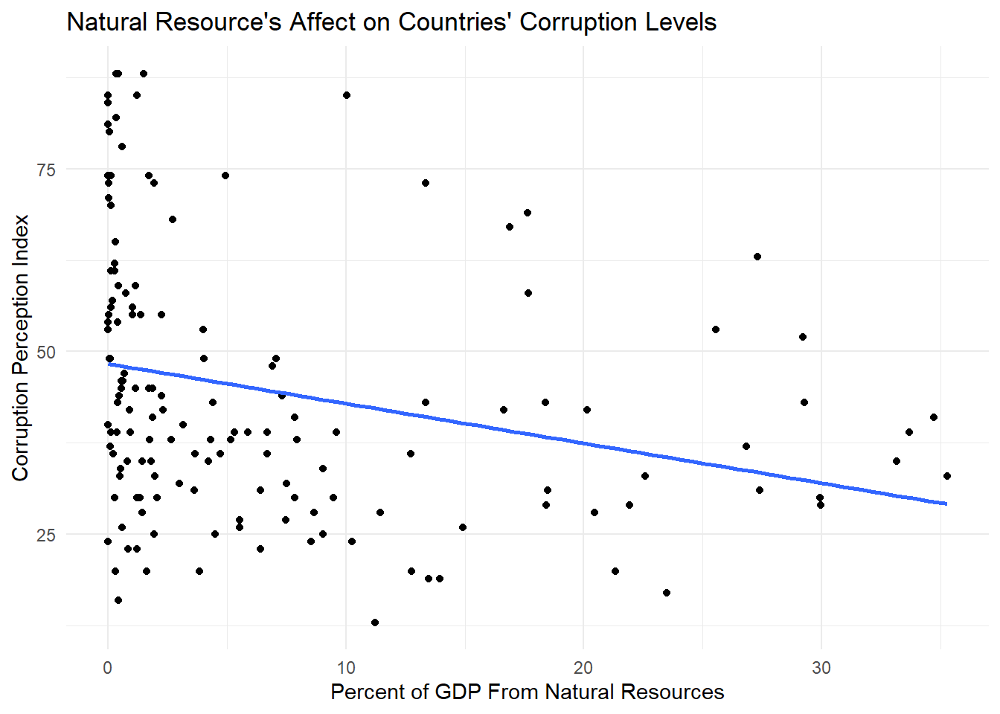

Code
# read in libraries
library(tidyverse)
library(here)
library(readr)
library(janitor)
library(sjPlot)
library(spdep)Corruption is an issue in countries across the world. Government structures are complicated, intertwined, and often run behind closed doors. This makes corruption as a whole extremely difficult to solve. What are the main influences on a country’s corruption level? Is it even quantifiable? I was motivated by these questions to take a stab at looking at a small piece of the corruption puzzle.
In this post we attempt to answer the question Does the percent of GDP from natural resources affect countries’ corruption levels?
My theory is that having natural resources that provide a large revenue source for a country could potentially invite corruption. Public officials may bribe gas, oil, or logging companies for a cut in the profit. Those companies may also bribe or attempt to coerce the government into larger sales or more land. Public officials may also prioritize company profits over public welfare, which has the potential to have large impacts on policy decisions that affect citizens.
The theory that I am describing is a very simplified version of a well-studied and highly debated issue called the resource curse. Essentially, natural resource wealth in countries (specifically developing countries) can lead to perverse effects on economic, social, and political well being. Case studies around the world have proved this to be true (although there is also case study evidence of the resource curse being “illusory”).
| Hypothesis: The percentage of GDP from natural resources has an effect on countries’ corruption levels |
|---|
| Null hypothesis: The percent of GDP from natural resources has no effect on countries’ corruption levels |
Everyone wants to solve corruption, but it’s a lot easier said than done. Corruption is a complicated issue with far more influences than most researchers are able to analyze in years of study, and certainly more than I can analyze in this short post.
My analysis plan is to create visualizations and linear models that can help us to examine the possibility of a significant correlation between the percent of GDP in a country that comes from natural resources versus our corruption perception index.
My plan is as follows:

Our data comes from two different sources. The first is for our corruption level data. We used a dataset from Transparency International, an organization that works to fight corruption worldwide. The organization has many facets, including acting as a think tank, a UNESCO consultant, and is involved in the UN.
They created a corruption perceptions index, which measures levels of corruption in 180 countries around the world from 0 (highly corrupt) to 100 (very clean). Transparency International takes data from 13 sources, such as banks, think tanks, and research advisory firms around the world. Each of these organizations ask leading experts in their field multiple questions that can be used to gauge corruption levels. Some sources only cover specific regions or continents, while others cover the majority of the world. Transparency International then takes the information and standardizes it on a scale of zero to one hundred,“this standardization is done by subtracting the mean of each source in the baseline year from each country score and then dividing by the standard deviation of that source in the baseline year [and]… …transformed to the CPI scale by multiplying with the value of the CPI standard deviation in 2012 (20) and adding the mean of CPI in 2012 (45), so that the data set fits the CPI’s 0-100 scale” (CPI report short methodology 2021). They then calculate the average for each country to find their published score.
The data itself, as well as the way I use it, comes with some caveats. Firstly, Transparency International uses varying organizations to get these scores, which in turn use varying methods. Although the scores are then standardized, it is still not a completely equal comparison for every single country. In my statistical analysis, I use this corruption perception index as a true corruption index for each country. There are clearly limitations to what anyone can truly know about the corruption in their country, and this index simply measures perceptions for that very reason. For the purposes of my calculations, I treat these numbers as true and fair values. In order to simplify my analysis, I am also not including the standard errors for these values, which could potentially oversimplify the results of the index.
Transparency International. (2021). 2021 Corruptions Perceptions Index. Transparency.org. https://www.transparency.org/en/cpi/2021.
The natural resource data comes from the World Bank Group, an organization with 189 member countries, working to give funds to low income countries. Their site also contains a catalog of open data about economic development worldwide. The dataset we used was the “World Development Indicators: Contribution of natural resources to gross domestic product” table. I have used data from 2021 in order to have consistency in year across the board.
Although this data is open source, we have no information about how these numbers were acquired. We trust at face value that this dataset is correct.
World Development Indicators. The World Bank. (2015). Worldbank.org. https://wdi.worldbank.org/table/3.14#
# read in libraries
library(tidyverse)
library(here)
library(readr)
library(janitor)
library(sjPlot)
library(spdep)# read in data
corruption <- read_csv(here("posts", "Natural_resource_corruption" ,"data", "2021_corruption.csv"))
natural_resources <- read_csv(here("posts", "Natural_resource_corruption" ,"data", "natural_resources.csv"))Our data comes from multiple sources. In order to join the corruption and natural resources datasets together, it’s crucial that we make sure that all the information is clean and lines up.
# Take our the rows that doesn't contain data from countries
natural_resources <- natural_resources[1:217, ]
# Join the data together
corrupt_resource <- full_join(corruption, natural_resources, by = c("Country / Territory" = "Country"))
# Rename the country column for clarity and clean up names
corrupt_resource_clean <- corrupt_resource |>
rename("country" = "Country / Territory") |>
clean_names()
# Select the columns we're interested in
corrupt_resource_select <- corrupt_resource_clean |>
select(country, iso3, cpi_score_2021,total_natural_resources_rents_percent_of_gdp, oil_rents_percent_of_gdp, natural_gas_rents_percent_of_gdp, coal_rents_percent_of_gdp, mineral_rents_percent_of_gdp, forest_rents_percent_of_gdp)
# Change CPI score data to numeric so we can work with it
corrupt_resource_select$cpi_score_2021 <- as.numeric(corrupt_resource_select$cpi_score_2021)
# Change total natural resource data to numeric as well
corrupt_resource_select$total_natural_resources_rents_percent_of_gdp <- as.numeric(corrupt_resource_select$total_natural_resources_rents_percent_of_gdp)
## Warning: NAs introduced by coercion
# exclude outliers
corrupt_resource_select <- corrupt_resource_select |>
filter(total_natural_resources_rents_percent_of_gdp <= 40) |>
filter(!is.na(cpi_score_2021))# Plot the data
first_plot <- ggplot(corrupt_resource_select, aes(x=total_natural_resources_rents_percent_of_gdp, y = cpi_score_2021)) +
geom_point() +
xlab("Percent of GDP from Natural Resources") +
ylab("Corruption Perception Index") +
labs(title = "Natural Resource's Affect on Countries' Corruption Levels") +
theme_minimal()
print(first_plot)At first glance, our data doesn’t really look correlated at all. But let’s dive a little deeper.
# Run linear regression summary
lm1 <- lm(cpi_score_2021 ~ total_natural_resources_rents_percent_of_gdp, data = corrupt_resource_select)
tab_model(lm1)| cpi score 2021 | |||
| Predictors | Estimates | CI | p |
| (Intercept) | 48.35 | 44.82 – 51.88 | <0.001 |
| total natural resources rents percent of gdp |
-0.54 | -0.86 – -0.23 | 0.001 |
| Observations | 153 | ||
| R2 / R2 adjusted | 0.072 / 0.066 | ||
There are a few numbers here that are of interest to us. First let’s look at the intercept and the ‘total_natural_resources_rents_percent_of_gdp’ (the slope). According to our model, if our hypothetical country had no GDP resulting from natural resources, the corruption level would be at 48. We could maybe buy this if we hadn’t looked at the graph, but when we look at our data points visually it looks like our intercept is really just halfway in between our huge cluster of points around zero that seem to be evenly dispersed on the y axis. When looking at the slope we can also see that it’s very small. Each percentage point increase in GDP results in a less than 1 index level decrease.
The p-values for both our intercept and slope are very small. Our intercept is less than .001 (essentially zero for our purposes) and our slope has a p-value of .000106, also a very small number. Both are far below .05, the number needed for a value to be statistically significant. So if these values are both statistically significant, why do I still not trust that it’s meaningful?
Let’s look at adjusted R squared value. It’s about 0.07. R squared is always a value from 0 to 1, where 0 means that the model explains essentially zero percent of the change in y, and 1 means that the model is the perfect fit and the variable explains 100 percent of the change in y. Our value is less than .1, essentially meaning that the percent of GDP from natural resources explains just over 7 percent of the corruption levels in countries. So our model is statistically significant but explains very little of corruption levels.
This makes sense when we look at our graph with our best fit line. If we squint at the graph, we can maybe see a correlation, but it’s certainly a stretch. The graph, along with our linear model summary, makes us think that there is definitely omitted variable bias here.
smooth_plot <- ggplot(corrupt_resource_select, aes(x=total_natural_resources_rents_percent_of_gdp, y = cpi_score_2021)) +
geom_point() +
xlab("Percent of GDP From Natural Resources") +
ylab("Corruption Perception Index") +
labs(title = "Natural Resource's Affect on Countries' Corruption Levels") +
theme_minimal() +
geom_smooth(formula = y ~ x,
se = FALSE,
method = lm)
print(smooth_plot)
My new theory is that the type of government could be a major contributing factor in corruption levels. It’s possible that this is an interactive model. My theory is that democratic countries will have a much less steep negative slope because the percent of GDP from natural resources would have less of an effect on corruption. Elections keep officials much more accountable. On the other hand, autocracies might have a steeper negative slope, as more money coming from a country’s natural resources could lead to an increase in corruption through exploitation. Let’s load in another dataset that has information on political regimes worldwide and test my theory.
My new analysis plan is to add political regime types to my model as an interaction. We can then graph and analyze the data to see if there’s a stronger correlation now that political regime type has been added.
Our data comes from Our World in Data, a website dedicated to being an open source platform for data sets to be used by scientists and others to improve our world. The website is slowly funded by grants and donations, and is made to be a platform for all.
Our specific data “Political Regime, 2021”, is a dataset of countries worldwide. They all get a designation of 0 through 3, which the political regime.
(all descriptions come from the dataset’s metadata) For clarity, I clean the data to change the numbers to the regime type
The data comes from the Regimes of the World (RoW) dataset, published by the Varieties of Democracy (V-Dem) project. Political scientists Anna Lührmann, Marcus Tannenberg, and Staffan Lindberg compiled assessments from anonymous experts in academia, media, or civil society to gauge democracy levels.
Democracy levels are mainly subjective. Although the data is as standardized as possible, subjectivity is impossible to avoid. People may have different ideas of civil freedoms or the voting in their country. The datasheet about the data does acknowledge this, although it’s impossible to completely fix. For our purposes here, I have chosen to take their political regime designations as objective truth.
Political regime. (n.d.). Our World in Data. https://ourworldindata.org/grapher/political-regime?time=2021
Herre, B. (2021, December 2). The “Regimes of the World” data: how do researchers identify which countries are democracies? Our World in Data. https://ourworldindata.org/regimes-of-the-world-data
# Read in data
regime <- read_csv(here("posts", "Natural_resource_corruption", "data", "political-regime.csv"))# Clean column names
regime_clean <- regime |>
rename("country" = "Entity") |>
clean_names()
# Replace numeric values with descriptive labels
regime_clean <- regime_clean %>%
mutate(political_regime = case_when(
political_regime == 0 ~ "closed_autocracies",
political_regime == 1 ~ "electoral_autocracies",
political_regime == 2 ~ "electoral_democracies",
political_regime == 3 ~ "liberal_democracies"
))# Join with other dataframe
corrupt_nat_dem <- full_join(corrupt_resource_select, regime_clean, by = c("iso3" = "code"))
# Select only rows and columns we're interested in
corrupt_nat_dem_select <- corrupt_nat_dem[1:180, ] |>
select(-country.y, -time, -year)regime_plot <- ggplot(corrupt_nat_dem_select, aes(x = total_natural_resources_rents_percent_of_gdp, y = cpi_score_2021, color = political_regime)) +
geom_point() +
xlab("Percent of GDP From Natural Resources") +
ylab("Corruption Perception Index") +
labs(title = "Natural Resource's Affect on Countries' Corruption Levels",
color = "Political regime") +
theme_minimal() +
geom_smooth(formula = y ~ x,
se = FALSE,
method = lm) +
scale_color_hue(labels = c("Closed Autocracies", "Electorial Autocracies", "Electoral Democracies", "Liberal Democracies"))
print(regime_plot)
## Warning: Removed 27 rows containing non-finite outside the scale range
## (`stat_smooth()`).
## Warning: Removed 27 rows containing missing values or values outside the scale range
## (`geom_point()`).Now this isn’t the prettiest graph, but it’s good enough that we can see the lines of best fits by regime type and we can see where the actual data points fall to get an idea of the accuracy of our best fit line.
We can see that the liberal democracies line is actually positive, which means that the as natural resource profit goes up, they have less and less corruption. Interestingly, electoral democracies and electoral autocracies seem to have very similar negative slopes. The closed autocracies seem to have a mostly flat slope that it very slightly positive.
These results are pretty unexpected. Let’s take a look at the linear model summary to check out our numbers.
lm2 <- lm(total_natural_resources_rents_percent_of_gdp ~ cpi_score_2021 + political_regime +cpi_score_2021:political_regime, data = corrupt_nat_dem_select)
tab_model(lm2)| total natural resources rents percent of gdp |
|||
| Predictors | Estimates | CI | p |
| (Intercept) | 1.75 | -8.05 – 11.54 | 0.725 |
| cpi score 2021 | 0.24 | -0.00 – 0.49 | 0.054 |
| political regime [electoral_autocracies] |
12.22 | -0.02 – 24.47 | 0.050 |
| political regime [electoral_democracies] |
12.21 | -2.05 – 26.48 | 0.093 |
| political regime [liberal_democracies] |
-1.74 | -24.48 – 21.00 | 0.880 |
| cpi score 2021 × political regime [electoral_autocracies] |
-0.38 | -0.70 – -0.05 | 0.023 |
| cpi score 2021 × political regime [electoral_democracies] |
-0.43 | -0.77 – -0.08 | 0.016 |
| cpi score 2021 × political regime [liberal_democracies] |
-0.22 | -0.59 – 0.16 | 0.258 |
| Observations | 150 | ||
| R2 / R2 adjusted | 0.158 / 0.116 | ||
The first thing I notice when I look at our results are that most p-values are above .05, which makes them all statistically insignificant. Therefore we fail to reject the null hypothesis. The only one that is significant is the electoral autocracies, although because the other values are not statistically significant, it’s hard for me to trust the electoral autocracy coefficients independent of the other values. It makes sense to me that this interaction is insignificant, because the slopes we were getting were very surprising and didn’t make much logical sense to me. We cannot assume that any of the interaction trends we saw were not just due to chance.
It seems like adding in the political regime was not the omitted variable I was looking for. I’m starting to suspect that there may be some spatial clumping and autocorrelation going on here. Let’s perform the Moran’s I test and plot the results to test my new hypothesis.
# Use the world dataset included in the spData library
world <- spData::world
# Join world dataset with previous data
world_join <- full_join(corrupt_resource_select, world, by = c("country" = "name_long"))
# Filter dataset to remove all NAs in relevant columns
world_join <- world_join |>
filter(!is.na(geom)) |>
filter(!is.na(pop))
world_join <- world_join[1:135,]
# Assign name to linear model
world_lm <- lm(cpi_score_2021 ~ total_natural_resources_rents_percent_of_gdp, data = world_join)
# Assign residual column
world_join$residual <- resid(world_lm)
# Make into sf object
world_join <- st_as_sf(world_join,
crs = "EPSG:4326",
sf_column_name = 'geom')
# Make into centroids
pts <- st_centroid(st_transform(world_join, 4326))
pts <- pts |>
filter(!is.na(pop)) |>
filter(!is.na(geom))
# Find neighbors
world_join.nb <- dnearneigh(pts, d1 = 0, d2 = 5000)
# Add spatiral weights
world_join.lw <- nb2listw(world_join.nb, style = "W", zero.policy = TRUE)
# Perform Moran's I test
moran_test <- moran.test(world_join$residual, world_join.lw, zero.policy = TRUE)
# Print the Moran's I test results
print(moran_test)
##
## Moran I test under randomisation
##
## data: world_join$residual
## weights: world_join.lw
##
## Moran I statistic standard deviate = 6.8527, p-value = 3.624e-12
## alternative hypothesis: greater
## sample estimates:
## Moran I statistic Expectation Variance
## 0.1284541112 -0.0074626866 0.0003933933
# Plot results
morans_plots <- ggplot() +
geom_sf(data = world, fill = "lightgray", color = "darkgray") +
geom_sf(data = world_join, aes(fill = residual, geometry = geom)) + scale_fill_gradient(low = "darkblue", high = "red") +
labs( title = "Moran's I",
x = "Longitude",
y = "Latitude" ) +
theme_minimal()
print(morans_plots)Unfortunately, we had to omit a good amount of countries because all of our datasets did not match. Despite this, we can still see a pattern of autocorrelation in our data. We can see in Northern Europe and in the Middle East, there is almost a gradient of colors because of autocorrelation. Countries close to red countries seem to be closer to red themselves, while countries close to blue countries seem to be closer to blue themselves. Similar colors are also clumped together in South America and Africa. This tells us that one country’s corruption levels are affecting others around it.
Our results are overall inconclusive. Our first linear model just looked at the percent of GDP from natural resources. There was no an obvious correlation from just looking at the data points on the graph, but our line of best fit revealed a negative slope, revealing that as the percent of GDP goes up, the corruption also goes up (a lower index number = more corruption). Although these results were statistically significant, the adjusted R squared value revealed that it only explained about seven percent of the corruption levels in countries around the world.
My solution to the low R squared value was to add another variable, as it was quite likely we had omitted variable bias. I decided to add political regime type as our additional variable. I logically assumed that the regime type would have differing affects on the relationship. When I added in political regimes however, I saw that my results were no longer statistically significant.
In an effort to explore what else could be contributing to corruption levels, I decided to try the Moran’s I test, which allows us to see if there is autocorrelation in our data. The answer was yes, there appears to be some. That means that countries’ corruption levels are being affected by the levels around it. Maybe stability in the surrounding countries brings stability into their neighboring countries. Maybe corruption spills over across borders. If we think about natural resources as well, they don’t follow political lines. Natural resources will probably be similar in neighboring countries. All of these factors lead to a need to examine further and account for this autocorrelation in our analysis.
If I had more time I would have continued exploring more variables and used our results from Moran’s I to account for our autocorrelation issue. Developed versus developing country, overall GDP amount, and economic systems would all be interesting to analyze in relation to corruption and natural resources as well. I am also skeptical that a linear model is truly the correct model to be using in this situation, as corruption is very complex and probably not a completely linear issue.
My next steps would be to use my Moran’s I calculations to go back and reanalyze my data, as well as add in additional factors that I believe could be relevant.
Full acknowledgements:
| Use: | Citation: |
|---|---|
| Resource curse information | Ross, M. L. (2013). The Politics of the Resource Curse: A Review. SSRN Electronic Journal. https://doi.org/10.2139/ssrn.2342668 |
| Natural resources data | World Development Indicators. The World Bank. (2015). Worldbank.org. https://wdi.worldbank.org/table/3.14# |
| Corruption index data | Transparency International. (2021). 2021 Corruptions Perceptions Index. Transparency.org. https://www.transparency.org/en/cpi/2021. |
| Political regime data | Political regime. (n.d.). Our World in Data. https://ourworldindata.org/grapher/political-regime?time=2021 |
| Political regime metadata | Herre, B. (2021, December 2). The “Regimes of the World” data: how do researchers identify which countries are democracies? Our World in Data. https://ourworldindata.org/regimes-of-the-world-data |
| Reference course materials | Max Czapanskiy. EDS 222 Statistics for Environmental Data Science graduate course at the Bren School of Environmental Science and Management at UCSB |